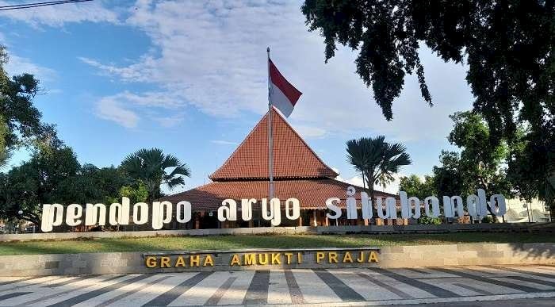
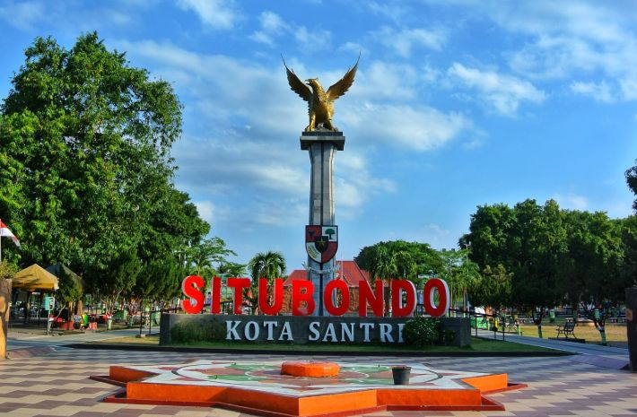
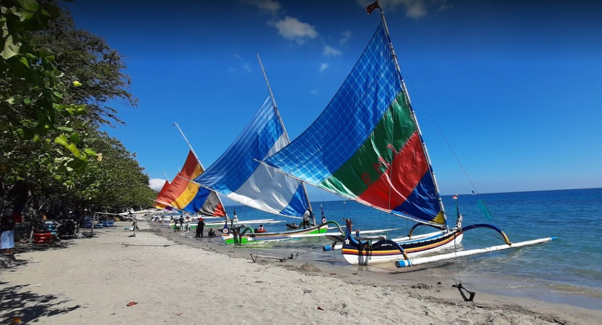
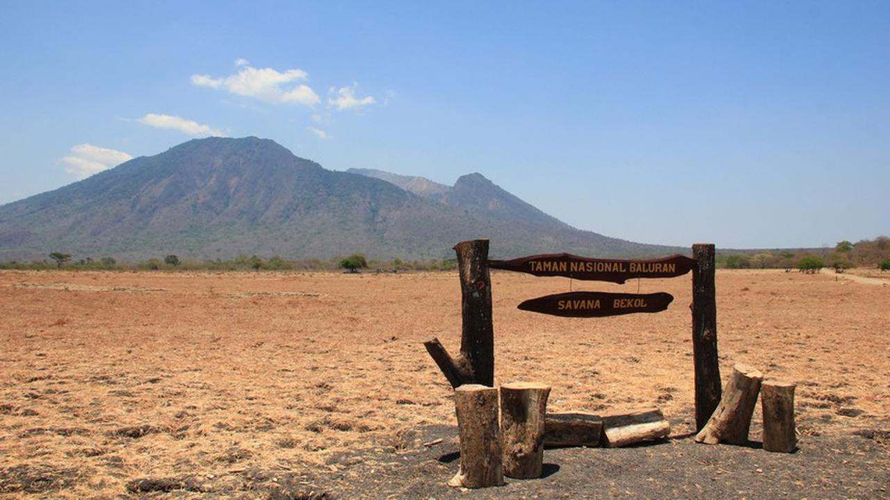

Sejarah
Kabupaten Situbondo memiliki sejarah yang kaya, dimulai dari zaman kerajaan Majapahit hingga masa penjajahan Belanda. Pada masa penjajahan, Situbondo menjadi salah satu pusat perlawanan terhadap penjajah. Kini, kabupaten ini dikenal sebagai daerah yang kaya akan budaya dan tradisi.
Geografis
Kabupaten Situbondo terletak di sebelah timur pulau Jawa, berbatasan dengan Laut Jawa di sebelah utara, Kabupaten Bondowoso di sebelah selatan, dan Kabupaten Probolinggo di sebelah barat. Dengan luas wilayah sekitar 1.800 km², kabupaten ini memiliki beragam potensi alam yang menarik.
Kabupaten Situbondo memiliki iklim tropis dengan dua musim, yaitu musim hujan dan musim kemarau. Suhu rata-rata di kabupaten ini berkisar antara 25-32 derajat Celsius.
Wisata
Kabupaten Situbondo memiliki banyak tempat wisata yang menarik untuk dikunjungi, seperti Pantai Pasir Putih, Taman Nasional Baluran, dan Air Terjun Tumpak Sewa. Selain itu, kabupaten ini juga terkenal dengan kerajinan tangan dan kuliner khasnya yang lezat.
Pantai Pasir Putih
Pantai Pasir Putih adalah salah satu pantai terindah di Situbondo. Dengan pasir putih yang lembut dan air laut yang jernih, pantai ini menjadi tempat yang ideal untuk bersantai dan menikmati keindahan alam. Di sekitar pantai, terdapat berbagai fasilitas seperti penginapan, restoran, dan tempat penyewaan peralatan snorkeling.
Taman Nasional Baluran
Taman Nasional Baluran adalah salah satu taman nasional yang terletak di Situbondo. Taman ini dikenal dengan keanekaragaman hayatinya yang melimpah, termasuk berbagai jenis flora dan fauna langka. Di taman ini, pengunjung dapat melakukan berbagai aktivitas seperti trekking, birdwatching, dan safari.
Kabupaten Situbondo
Kota Santri Pancasila